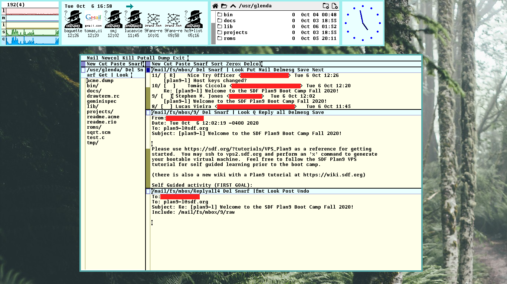
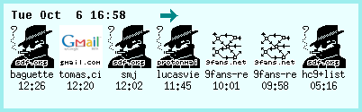
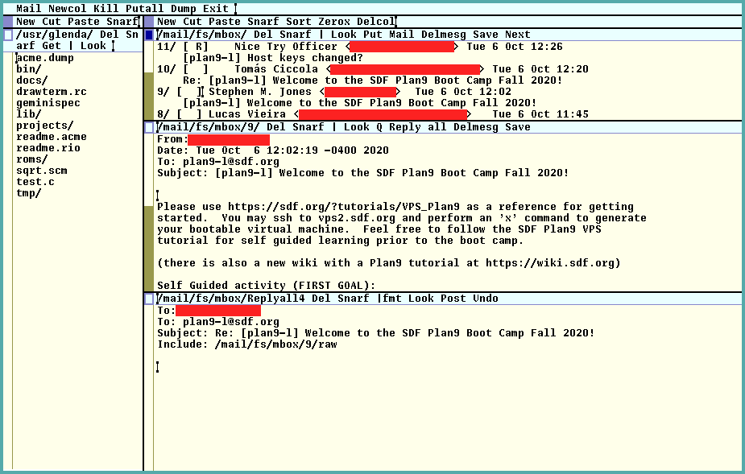

Table of Contents

Introduction
Over the last days, a Plan 9 bootcamp is taking place at SDF.org. I was one of the lucky people who got in, and so I and a bunch of people were given temporary VPS access so that we can try, experiment and discover things about Plan 9 through remote connection.
SDF is a community that has been operating for 35 years now, offering free Unix shell access to anyone willing to learn more about Unix systems. It is a welcoming community to both newbies and experienced hackers – in the best sense of the word. The users are people passionate about technology in general, who learn about new things while also leveraging the good, old things from the golden age of computation.
In this post, I describe some of the stuff I did to configure e-mail reading and sending on Plan 9. And of course, it will be possible to do that through Acme.
Before going forward
This is not an introduction to Plan 9. This post is mostly directed to hackers that may be struggling with mail support in it.
I assume you have some familiarity with sam. You may also do it
directly on a single-machine Plan 9 box or through a drawterm
connection.
The described steps could also be done from text console and using ed,
though I do not recommend it; Plan 9 is supposed to be much more
enjoyable to use from a graphical terminal, with a 3-button mouse.
Achtung!
This post is heavily inspired by the links below. They contain most of the information to come.
The last link is a video showing details on using Acme for e-mail. You may want to see it at the end.
Let's get started.
Configuring Gmail
First of all, you need to configure your Gmail account for remote access.
Go to Gmail from a browser, go to settings, IMAP/POP settings, then enable IMAP and SMTP connections.
After that, you will need to allow Gmail to be accessed by "less secure apps", which means apps that don't have two-factor authentication. You can check this out at https://myaccount.google.com/lesssecureapps.
There seems to be a way to use a password just for a single program,
though it involves extra bureaucracy. You will likely find it on
tutorials setting up Gmail for other programs such as offlineimap and
mbsync/isync, but this is out of the scope of this post.
Configuring passwords
We need to configure passwords so that they can be used for IMAP and
SMTP authentication. Running these commands instructs factotum to ask
you for entering the password on console.
Most people will just echo stuff directly into factotum's ctl file; I
deliberately chose not to do that, since factotum can prompt us for
stuff which should not be echoed to the console in the first place.
You may find this pattern useful for entering passwords for ssh and
git in the future as well.
For more info, run man factotum.
% auth/factotum -g 'proto=pass server=imap.gmail.com service=imap user=your-mail@example.com !password?' % auth/factotum -g 'proto=pass server=smtp.gmail.com service=smtp user=your.mail@example.com !password?'
Optionally, you can change those commands slightly so that you inform
the passwords explicitly. Those commands can be put on session
initialization files, e.g. /bin/termrc.local or $home/lib/profile, if
you want factotum's knowledge of your passwords to persist at an
eventual reboot of your auth server:
auth/factotum -g 'proto=pass server=imap.gmail.com service=imap user=your.mail@example.com !password=YOURPASSWORD' auth/factotum -g 'proto=pass server=smtp.gmail.com service=smtp user=your.mail@example.com !password=YOURPASSWORD'
Obviously, this is not safe if you want to keep your passwords encrypted.
Note that Plan 9 is not the kind of OS which expects you to shut it
down or reboot it entirely, all the time. In fact, the best approach
is to have an auth server, responsible for managing factotum, so you
just have to enter these passwords once and leave it running, managing
only that, and preferably using an encrypted file.
Starting upasfs and receiving mail over IMAP
upas/fs effectively mounts a remote mailbox so that you can see your
email locally. It supports POP3 and IMAP, with or without SSL.
We will be using IMAP with SSL. For that, run this on console, replacing with your mail on pertinent parts:
% upas/fs -f /imaps/imap.gmail.com/your.mail@example.com
This command is supposed to fail, giving you an error related to server certificate, more or less like this:
upas/fs imap: server certificate sha256=xxxx not recognized
Copy the sha256 hash fragment (including the sha256 part) and tell
tls that it should be trusted:
% echo 'x509 sha256=xxxx' >>/sys/lib/tls/mail
After that, make upas/fs run on startup by copying the command above
to a session initialization file, preferably after starting plumber.
I recommend doing it at file $home/lib/profile, which runs at the
beginning of every session.
Caveats on the profile script
If you are using the default profile script, the upas/fs starting
command can be put at both terminal and cpu cases. They relate to
"local" connection (physical, directly using a keyboard and a mouse on
your box) and a "remote" connection (from another terminal, using
drawterm).
The con case is just the case for raw console, which is rather crappy
and you should not use anyways.
Running faces to see user icons
We can check if it works by running faces on console:
% faces -i
If everything worked out, you should see some icons populating the screen. Each icon corresponds to the user who sent a single e-mail to you.

If you right click them, it will open a console running nedmail, and
you'll be able to read your e-mail, though this is not the most
comfortable way to do this. So we'll set up Acme Mail later.
Finally, if you are interested in running faces on boot, you may want
to add it to your $home/bin/rc/riostart script. Here's how I start it
on my box:
window 161,0,560,117 faces -i
Enabling riostart
It may be the case that riostart is disabled for connections from
drawterm into you CPU server.
Make sure that rio invokes the riostart script on
$home/lib/profile, (specially on the cpu case for remote connections).
If it doesn't, you may want to replace rio's startup command with:
rio -i riostart
Sending e-mail over SMTP
Before enjoying our mail service, we need to make sure that we can send mail. For that, some extra configuration is needed so that we can set up SMTP.
Setting up /mail/lib/rewrite
You will need to setup /mail/lib/rewrite. When opening it, the text
already written there will instruct you to copy and paste one of the
files rewrite.gateway or rewrite.direct into it. Note that both these
files are also in /mail/lib.
Since we are relying on the remote Gmail server to manage our e-mail,
copy everything inside rewrite.gateway into rewrite.
Now, wherever the address YOURDOMAIN.DOM is listed on that file,
replace it with gmail.com. For example:
# append the local domain to addresses without a domain local!"(.+)" alias \1@gmail.com local!(.*) alias \1@gmail.com
For more information on those files and what they do, see man rewrite.
Setting up SMTP server variable
Now open /lib/ndb/local. At its end, define the $smtp variable:
smtp=smtp.gmail.com
Setting up /mail/lib/remotemail
Finally, open /mail/lib/remotemail. This will allow you to gateway to
your Gmail account. This is the script which effectively sends your
e-mail.
#!/bin/rc shift sender=your.mail@example.com shift addr=tcp!smtp.gmail.com!587 shift fd=‘{/bin/upas/aliasmail -f $sender} switch($fd){ case *.* ; case * fd=gmail.com } exec /bin/upas/smtp -u your.mail@example.com -a -h $fd $addr $sender $*
Fixing SMTP certificates
We are almost done. The only problem is that Plan 9 still does not trust Gmail's SMTP server.
Try sending an example e-mail:
% echo hello | mail -s test your.username@gmail.com
This will fail, but it will also yield a certificate error, which you
can see when you cat the file /sys/log/smtp. It will list your IP and
the current date, and then a message like this will follow:
cert for smtp.gmail.com not recognized: sha=xxxx
Just like we did with upas/fs, we need to make it trusted, but this
time we echo to a different file:
% echo 'x509 sha256=xxxx' >>/sys/lib/tls/smtp
You can try the command to send an e-mail again now. It should work.
Configuring mail headers
It is interesting to have a header set up with your information when
sending a mail. This can be done through the file
/mail/box/$user/headers. Here is an example of what can be put there:
From: "Glenda" <your.username@gmail.com>
Using Acme Mail
Now that everything is set up, we just need to use Acme to run its
mail client. Once it is run, right clicks on faces's icons will just
open said mail on Acme's window.
To open Acme Mail, just write "Mail" (sans the quotes) anywhere, then
middle-click it. Acme will then open a buffer containing your list of
e-mails.

You'll notice that each e-mail has a numbered directory at its left. Right-clicking that number will open the e-mail in a new buffer.
You can reply to that e-mail by right-clicking "Reply", quote the
e-mail by right-clicking "Q", and so on.
If you want to reply to a mailing list, you can select and
middle-click "Reply all" (or even middle-select "Reply all" and
release the button).
To compose new mail, just right-click the word "Mail" on top of your
mail list (not on top of Acme window!).
Composing mail is just a matter of typing stuff directly in the buffer. For example, typing this:
To: <someone@example.com> Subject: Testing mail Testing e-mail on Acme!
is everything that is needed for writing an e-mail and its metadata.
When you are done, middle-click "Post", or click "Del" to cancel.
Conclusion
That's it for now. This is supposed to be a concise tutorial; there may be errors here and things I did not explore. For that, I count on the reader to take a peek at the links mentioned earlier; they will provide greater insight than anything I could ever say here.
And if you're a bootcamper, don't forget to interact on com and
through the mailing lists!